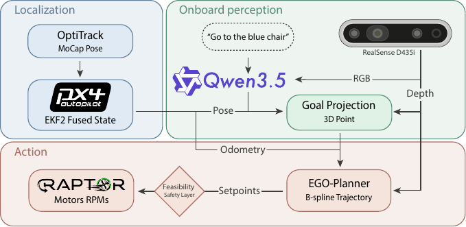
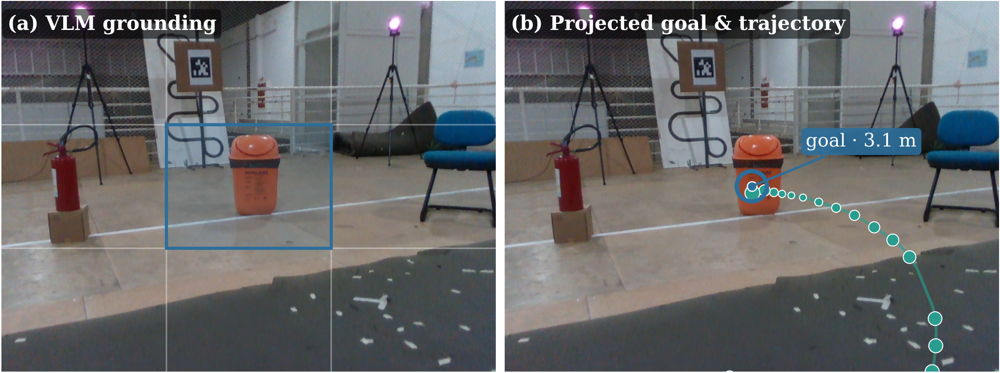
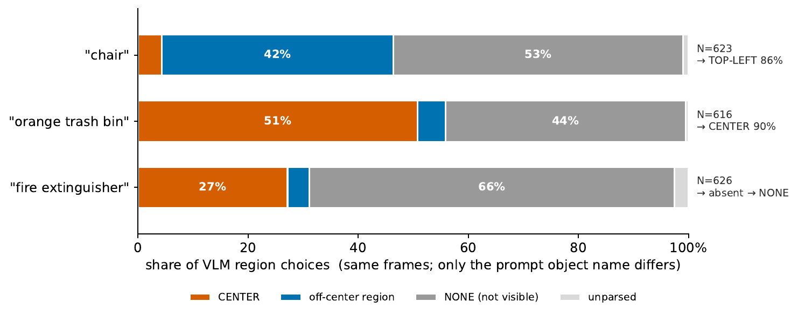
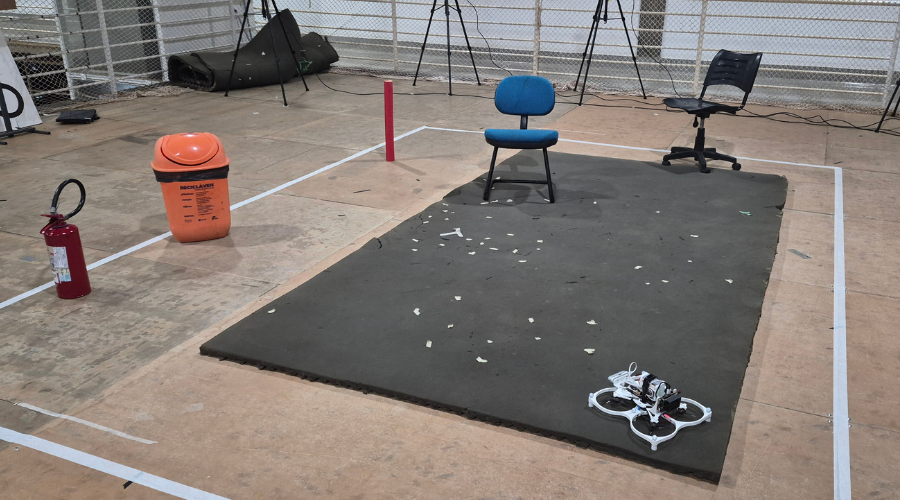
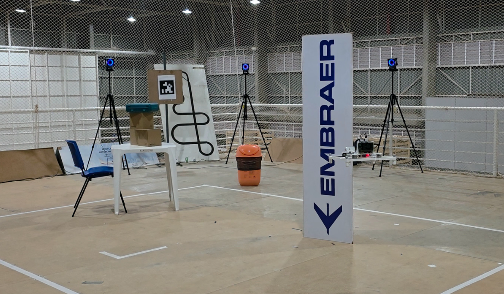

Abstract
Vision-language models (VLMs) have recently enabled unprecedented generalization for vision-language navigation (VLN) across robotic platforms. On aerial robots, however, end-to-end VLN remains largely unexplored — limited onboard compute, hierarchical-integration complexity, and safety concerns get in the way. We present an aerial-native, fully onboard VLN framework with zero-shot generalization to unseen instructions and safety mechanisms designed for indoor flight. A quantized VLM paired with a fast B-spline 3D planner supports open-vocabulary object-goal navigation; a pretrained reinforcement-learning policy tracks the planner setpoints zero-shot across quadrotors; and lightweight safety measures anticipate the most common failure modes of VLN pipelines ported to a UAV stack. We deploy the full stack on a real UAV across 15 open-volume flights, reaching a 0.87 success rate (13 of 15) with 5.72 cm goal error and 32.91 cm tracking error, and validate obstacle avoidance in 6 additional cluttered-environment trials with collision-free tracking and safe perception gating.
How it works
A decoupled stack keeps grounding, planning, and control as separate, inspectable stages.

Open-vocabulary grounding
The VLM grounds referents at the coarse region level — accurate, cheap to validate, and robust to depth noise.


Varying only the referent name over identical frames, the VLM maps present objects to disjoint, scene-consistent regions — the chair to the top-left (86%) and the trash bin to the center (90%) — and reports an absent object as not visible in 66% of frames. Grounding follows the prompted name rather than a fixed regional bias.
Onboard results
15 real flights across three everyday referents, every stage computed on the drone.
| Referent | Success rate ↑ | Goal err. (cm) ↓ | Track err. (cm) ↓ | Avg. GPU (%) |
|---|---|---|---|---|
| Trash bin | 1.00 | 0.00 | 34.96 | 42.2 |
| Chair | 0.80 | 10.07 | 26.13 | 37.3 |
| Fire extinguisher | 0.80 | 7.08 | 37.64 | 38.4 |
| Overall | 0.87 | 5.72 | 32.91 | 39.3 |
| Stage | Median | 95th pct. | Max |
|---|---|---|---|
| Time-to-first-token | 0.60 s | 0.66 s | 0.72 s |
| Total inference | 0.79 s | 0.88 s | 1.12 s |
Onboard flight
A representative run — “go to the trash bin” — grounded, planned, and flown entirely on the drone's Jetson Orin NX.
Navigation in clutter
The same stack, unchanged, avoids obstacles between take-off and the target — or safely declines to commit.
Experimental setup


Citation
@inproceedings{tayar2026vlnonthefly,
title = {VLN on the Fly: An Onboard Vision-Language Navigation Stack for Aerial Robots},
author = {Tayar, Marco S. and Tommaselli, Felipe and Capezutto, Gianluca and
Saraiva, Pedro Antonio Rabelo and de Freitas, Pedro H. V. and Kido, Lucas and
Sonego, Guilherme and Godoy, Ricardo V. and Becker, Marcelo},
booktitle = {International Micro Air Vehicle Conference (IMAV)},
year = {2026}
}
Acknowledgments
Supported in part by the São Paulo Research Foundation (FAPESP), grants #2025/20858-7 and #2025/22381-3; the Conselho Nacional de Desenvolvimento Científico e Tecnológico (CNPq), grant 308092/2020-1; and Petrobras, using resources from the R&D clause of the ANP, in partnership with the University of São Paulo and FAFQ.